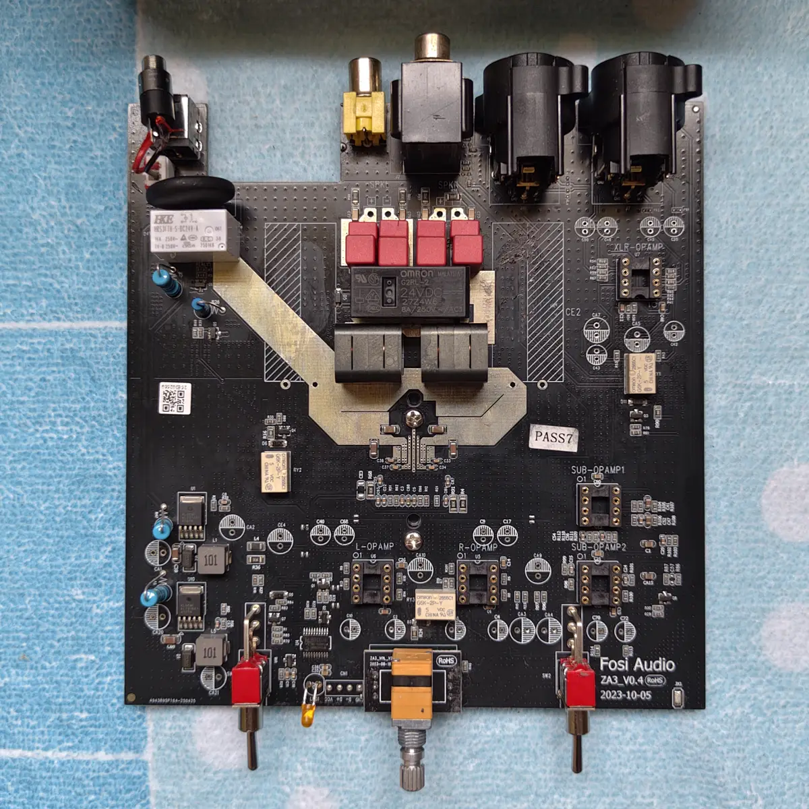
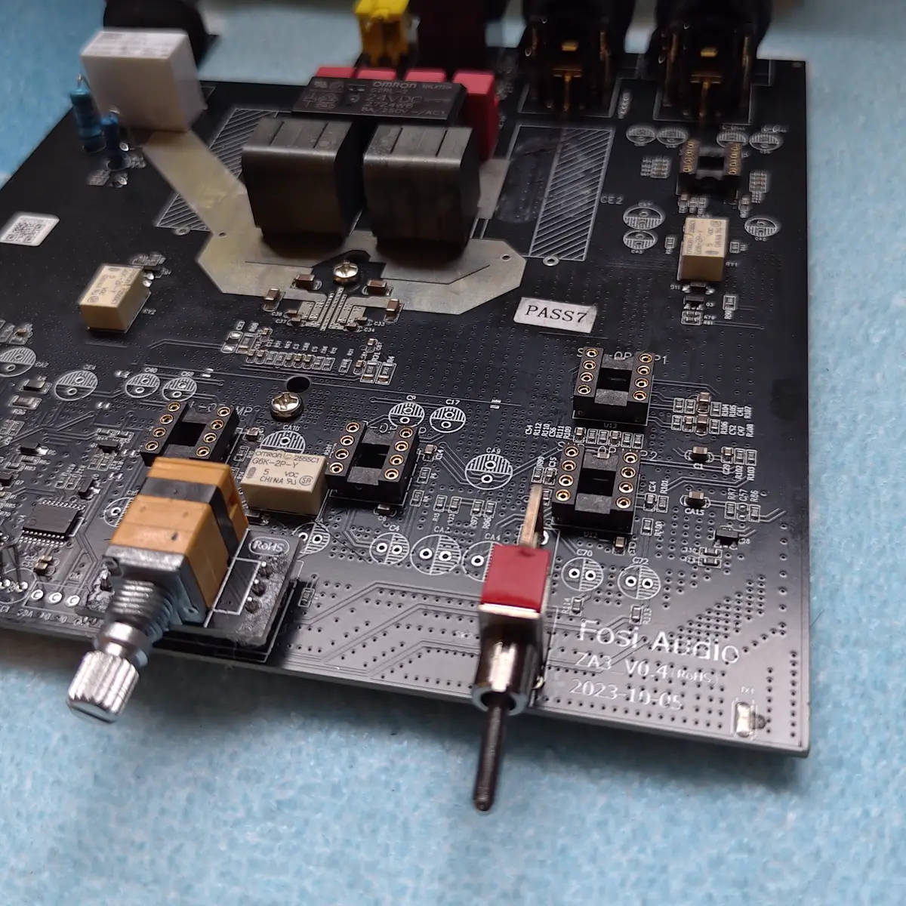
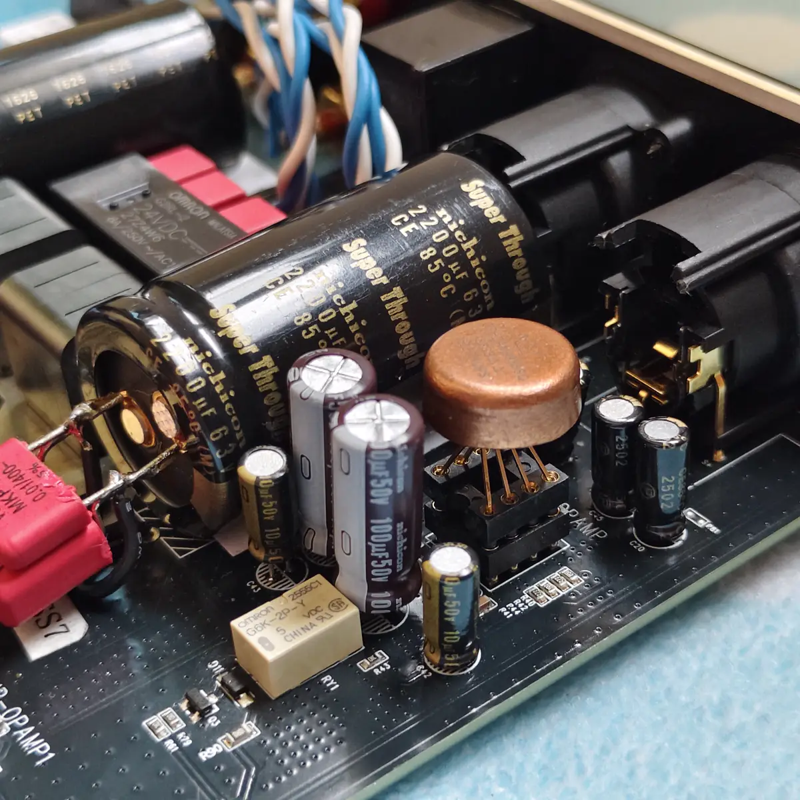
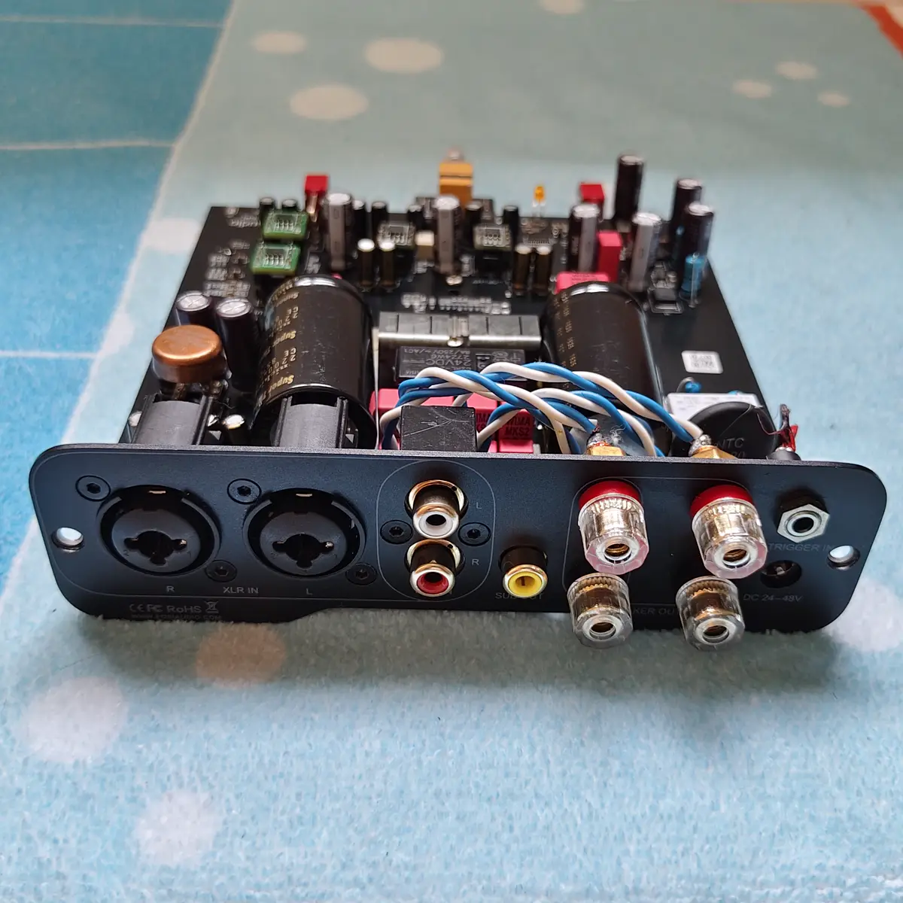
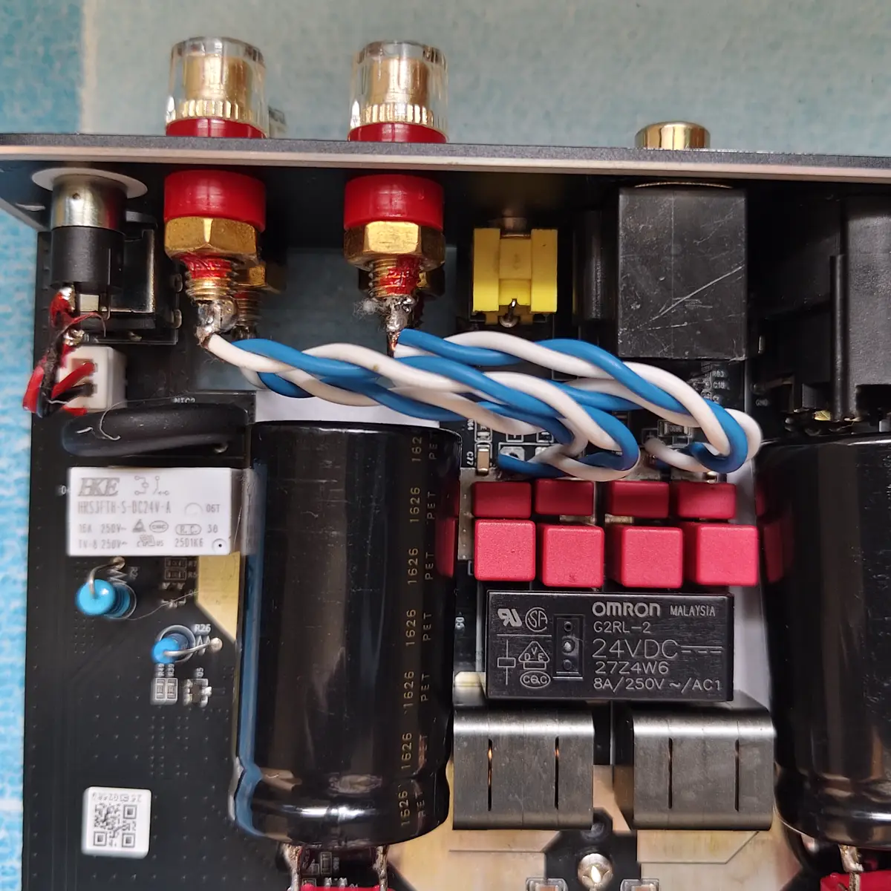
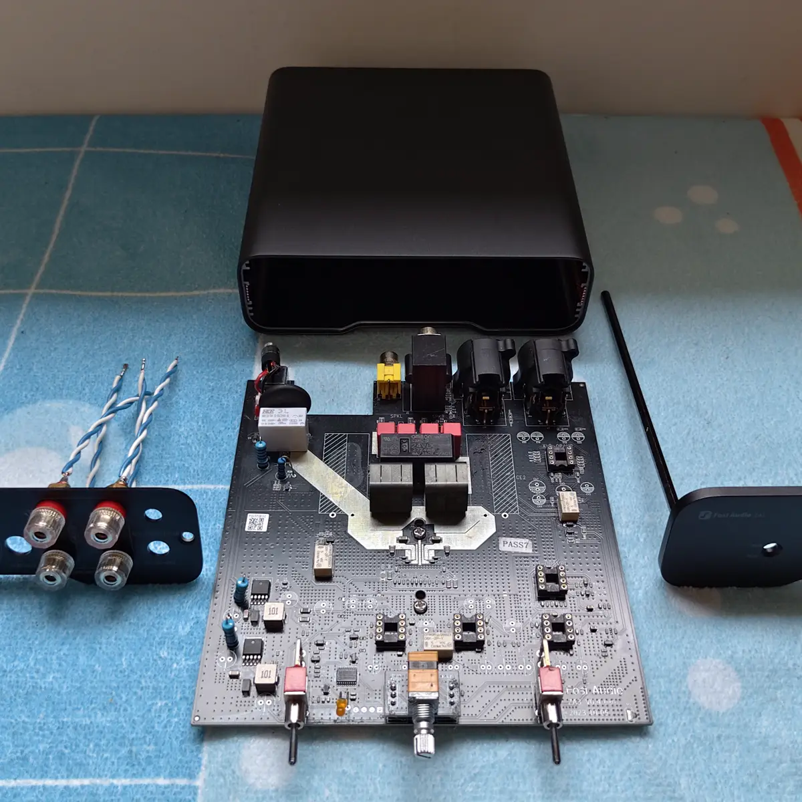
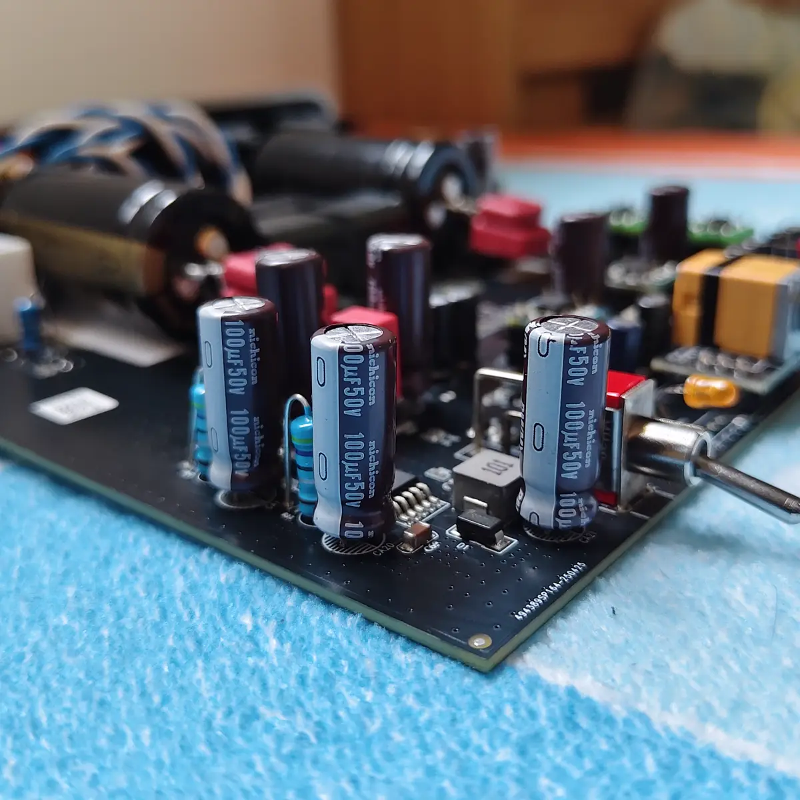
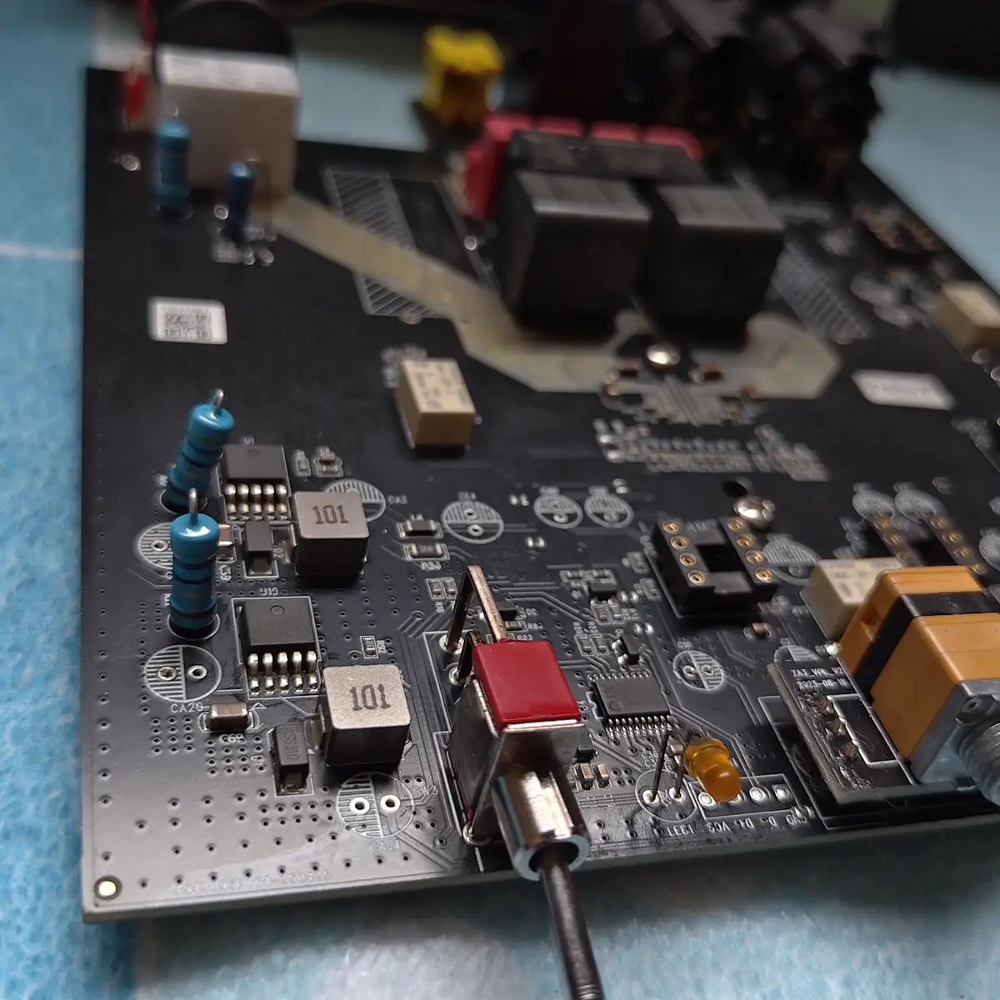
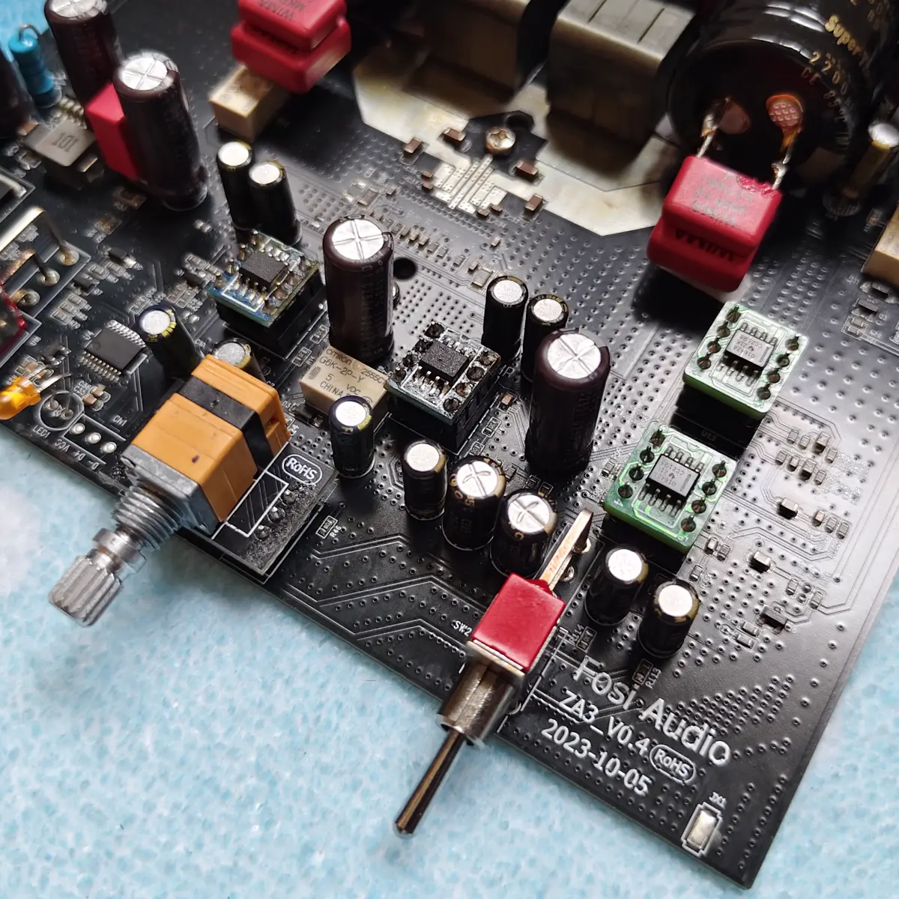
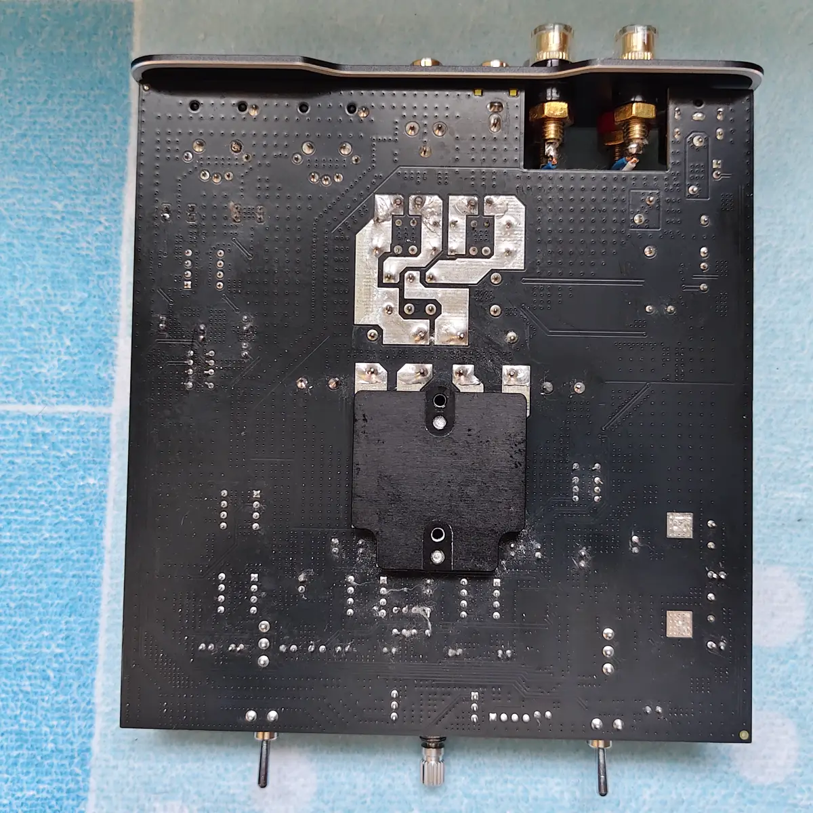

01 / PROJECT APPROACH
Analyze.
Modify. Test. Listen.
Fosi Audio ZA3 เป็น Class-D Power Amplifier ขนาดกะทัดรัดที่รองรับทั้ง RCA และ Balanced XLR และมีโครงสร้างวงจรที่เปิดโอกาสให้ปรับแต่งภาค Analog และ Op-Amp ได้หลายตำแหน่ง
เป้าหมายของโปรเจกต์นี้ไม่ใช่การเปลี่ยนอุปกรณ์ให้มากที่สุดหรือแพงที่สุด แต่เป็นการศึกษาหน้าที่ของวงจรเดิม แล้วปรับแต่งเป็นจุด ๆ เพื่อให้สามารถตรวจสอบผลของการเปลี่ยนแปลงแต่ละส่วนได้อย่างเป็นระบบ
แนวทางของ Audio Tech Labs คือศึกษาวงจรก่อนแก้ไข รักษาความเข้ากันได้ทางไฟฟ้า ตรวจสอบความเสถียร แล้วจึงประเมินผลจากการใช้งานจริง
02 / ORIGINAL BOARD & PREPARATION
เริ่มจาก
บอร์ดจริง
ขั้นตอนแรกคือถอด ZA3 ออกจากตัวถังและตรวจสอบ PCB ทั้งระบบ ตั้งแต่ Input, Balanced XLR, Main L/R Op-Amp, Subwoofer Stage ไปจนถึง Power Supply
อุปกรณ์บางตำแหน่งถูกถอดออกเพื่อเตรียมบอร์ดสำหรับการปรับแต่ง โดยเฉพาะจุด Op-Amp และ Capacitor พร้อมติดตั้ง Socket ในตำแหน่งที่ต้องการให้สามารถเปลี่ยนหรือบำรุงรักษาได้โดยไม่ต้องบัดกรี PCB ซ้ำหลายครั้ง


03 / ANALOG STAGE & OP-AMP
แยกหน้าที่
แต่ละ Stage
Final Configuration ใช้ Op-Amp แตกต่างกันตามหน้าที่ของวงจรแต่ละส่วน แทนการใช้รุ่นเดียวกันทั้งเครื่อง
การเลือกอุปกรณ์พิจารณาจากตำแหน่งใช้งาน ความเข้ากันได้ทางไฟฟ้า ความเสถียร และลักษณะโหลดของวงจร ไม่ได้เลือกจากชื่อรุ่นหรือราคาเพียงอย่างเดียว
HDAM 9988SQ
ใช้งานในภาค Balanced / Input Stage ของระบบ
Dual OPA627
ใช้ในช่องสัญญาณหลักซ้ายและขวาก่อนเข้าสู่ภาคขยายกำลัง
OPA1642
ใช้ในส่วน Subwoofer Stage ตามหน้าที่ของวงจร


04 / POWER SUPPLY
Power Supply
เป็นส่วนของระบบ
ภาคจ่ายไฟเป็นอีกจุดที่ให้ความสำคัญ เพราะ Power Amplifier ต้องรับมือกับกระแสที่เปลี่ยนแปลงตามสัญญาณเสียงตลอดเวลา
Reservoir Capacitor ในโปรเจกต์นี้อยู่ในระดับ 2,200 µF / 63 V พร้อมปรับ Capacitor ในจุดย่อยของวงจร Analog และภาค Op-Amp รวมถึงใช้ Film Bypass ในตำแหน่งที่พิจารณาแล้วว่าเหมาะสม
การเลือก Capacitor ไม่ได้พิจารณาเฉพาะค่าความจุ แต่ดู ESR, Ripple Current, Voltage Rating, ขนาดจริง และตำแหน่งใช้งานร่วมกันด้วย ค่า capacitance ที่มากกว่าไม่ได้หมายความว่าจะเหมาะกว่าเสมอไป


05 / INTERNAL WIRING
รายละเอียดเล็ก
ที่ไม่ควรมองข้าม
ระบบสายภายในได้รับการจัดใหม่ โดยเฉพาะเส้นทาง Speaker Output เพื่อให้ทางเดินสายเป็นระเบียบและลดพื้นที่ loop ในบริเวณที่มีกระแสสูง
การเดินสาย จุดบัดกรี และตำแหน่งของสายที่อยู่ใกล้ภาคกำลังเป็นส่วนหนึ่งของงานโมดิฟาย ไม่ใช่เพียงเรื่องความสวยงามของงานประกอบ

06 / FINAL CONFIGURATION
Final
Configuration
ชุดสุดท้ายที่เลือกใช้งานหลังจากการปรับแต่งและตรวจสอบแต่ละส่วนของวงจร
- Device
- Fosi Audio ZA3
- Amplifier Type
- Class-D Power Amplifier
- Inputs
- RCA / Balanced XLR
- Balanced / Input Stage
- HDAM 9988SQ
- Main Left / Right
- Dual OPA627
- Subwoofer Stage
- OPA1642
- Reservoir Capacitor
- 2,200 µF / 63 V
- Modification Areas
- Analog Stage, Op-Amp, Power Supply, Capacitor, Bypass, Internal Wiring
- Project
- Audio Tech Labs
- Method
- Modification / Testing / Listening Evaluation
07 / PROJECT GALLERY
Technical Gallery
ภาพรายละเอียดจากขั้นตอนการเตรียมบอร์ด การปรับแต่ง และการประกอบ Final Configuration



08 / WHAT THIS PROJECT SHOWS
เปลี่ยนเฉพาะสิ่งที่
มีเหตุผล
โปรเจกต์ ZA3 แสดงให้เห็นว่าการโมดิฟายเครื่องเสียงไม่จำเป็นต้องหมายถึงการเปลี่ยนอุปกรณ์ทุกชิ้น แต่ต้องเข้าใจว่าแต่ละตำแหน่งทำหน้าที่อะไรและสัมพันธ์กับวงจรเดิมอย่างไร
สำหรับ Audio Tech Labs งานโมดิฟายควรอธิบายได้ว่าเปลี่ยนอะไร เพราะอะไร อยู่ส่วนไหนของวงจร และตรวจสอบผลอย่างไร มากกว่าการอธิบายด้วยความรู้สึกเพียงอย่างเดียว
Analyze. Modify. Test. Listen.